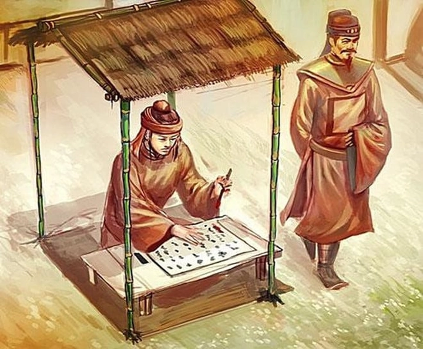
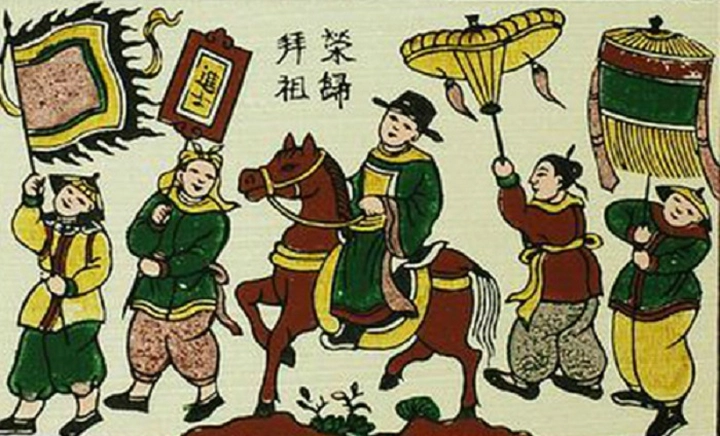
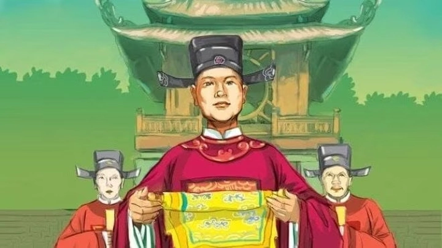
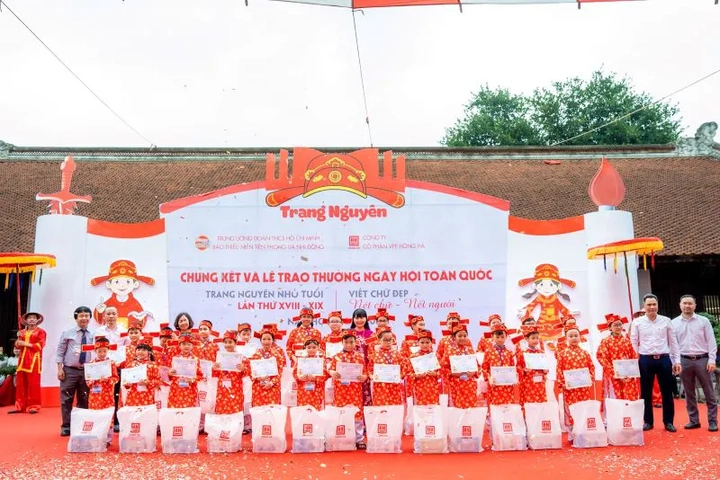

Trạng nguyên thời xưa - Biểu tượng của trí tuệ và đạo đức Việt Nam
Từ thời phong kiến xa xưa, Trạng nguyên là biểu tượng của trí tuệ, đạo đức và niềm tự hào của đất nước Việt Nam qua hàng thế hệ. Những người đạt danh hiệu trạng nguyên không chỉ là người giỏi khoa cử, mà còn là hình mẫu của trí thức, của đạo đức và của ý chí vượt qua mọi thử thách trên con đường học vấn.
Thông qua hành trình của các sĩ tử ngày xưa, chúng ta hiểu rõ hơn về nền văn hóa Nho học, truyền thống khoa bảng Việt Nam và các lễ hội truyền thống thể hiện lòng tôn vinh hiền tài của nhân dân ta. Từ hình ảnh những sĩ tử trong những kỳ thi khắc nghiệt cho đến lễ vinh quy bái tổ trang trọng nơi quê nhà, câu chuyện về trạng nguyên vẫn còn nguyên giá trị góp phần làm phong phú thế giới tinh thần Việt Nam.
Trạng nguyên là ai?
Trong lịch sử phát triển của hệ thống thi cử phong kiến Việt Nam, trạng nguyên là danh hiệu cao nhất dành cho người thi đỗ đầu trong kỳ thi Đình – kỳ thi quan trọng khép lại quá trình thi cử của các sĩ tử, phản ánh trí tuệ và đạo đức của người thi đỗ. Những trạng nguyên không chỉ nổi bật về kiến thức, mà còn là những danh nhân Việt Nam tiêu biểu, biểu trưng cho khí chất của người trí thức Việt Nam qua các thời kỳ.
Ngẫm lại quá khứ, chúng ta thấy rằng hệ thống thi cử phong kiến của Việt Nam kéo dài từ thời Lý, Trần, Lê, đến Nguyễn, đã góp phần hình thành nên một nền giáo dục đặc trưng, trong đó văn hóa Nho học đóng vai trò chủ đạo. Qua các kỳ thi, những sĩ tử ngày xưa vừa thể hiện khả năng học vấn, vừa thể hiện phẩm cách đạo đức của người hiền tài, góp phần xây dựng xã hội ổn định, luôn coi trọng tri thức và đạo đức như hai yếu tố không thể tách rời.
Trạng nguyên không chỉ là người thi đỗ cao nhất, mà còn là biểu tượng của khát vọng vươn tới chân trời của trí tuệ nhân loại. Những người này như những ngọn đuốc soi đường cho các thế hệ sau, thúc đẩy tinh thần học tập, nghị lực vượt khó, và niềm tin vào lý tưởng văn hóa Nho học – tôn vinh trí tuệ kết hợp đạo đức để xây dựng đất nước phồn vinh. Dù qua nhiều thời kỳ, danh hiệu trạng nguyên vẫn giữ nguyên giá trị thiêng liêng trong lòng mỗi người dân Việt, như một lời nhắc nhở về ý nghĩa lớn lao của lễ hội truyền thống Việt Nam luôn hướng về hưng thịnh của đất nước qua tri thức.

Hành trình trở thành Trạng nguyên
Quá trình thi cử nghiêm ngặt và khắt khe của sĩ tử ngày xưa
Hành trình của các sĩ tử để trở thành trạng nguyên không chỉ là quá trình thi cử, mà còn là cả những thử thách về thể chất và tinh thần. Hệ thống thi cử của Việt Nam thời phong kiến gồm ba cấp độ chính: Thi Hương, Thi Hội, Thi Đình. Kỳ thi Đình chí là kỳ thi có cấp độ cao nhất tương đượng với cấp độ Quốc gia ở thời điểm hiện đại. Mỗi cấp độ đều được tổ chức nghiêm ngặt, đòi hỏi sự chuẩn bị kỹ lưỡng và kiến thức toàn diện về các lĩnh vực văn học, lịch sử, luật pháp cùng các môn thi luận.
Thời gian chuẩn bị cho các kỳ thi này thường kéo dài nhiều năm, thậm chí hàng chục năm, mỗi sĩ tử đều ngày đêm ôn luyện để vượt qua các kỳ thi. Thật khó có thể hình dung rõ ràng về nếp sống của các sĩ tử ngày xưa khi họ phải chong đèn suốt đêm, học trong những lều chõng chật hẹp, dưới ánh sáng của đèn dầu, với một nếp sống học hành gian khổ, vượt mọi thử thách để khẳng định khả năng trí tuệ của mình.
Trong các câu chuyện dân gian, những giai thoại về các danh nhân Việt Nam như Nguyễn Bỉnh Khiêm, Mạc Đĩnh Chi luôn là minh chứng cho nghị lực và ý chí vươn tới chân trời tri thức. Họ đã vượt qua mọi rào cản để ghi danh trong lịch sử thi cử Việt Nam, để lại những câu chuyện về tài năng, đạo đức và phẩm chất của người trí thức thời xưa. Chính những hình ảnh này góp phần làm sống dậy truyền thống khoa bảng Việt Nam, nâng cao ý nghĩa của việc học tập, rèn luyện đạo đức trong xã hội.
Những câu chuyện kỳ lạ và giai thoại nổi bật
Trong quá trình thi cử, nhiều giai thoại nổi bật đã trở thành biểu tượng của trí tuệ, nghị lực và đạo đức của người sĩ tử xưa. Một trong số đó là chuyện của Nguyễn Hiền – trạng nguyên trẻ nhất trong lịch sử, mới 13 tuổi, đã khiến muôn đời kính phục về sự thông minh vượt bậc của mình. Trong khi đó, Mạc Đĩnh Chi lại nổi tiếng với khả năng phân giải các vấn đề Phật giáo và thời Thăng Long, trở thành biểu tượng của trí tuệ lỗi lạc, góp phần xây dựng nên hình mẫu danh nhân Việt Nam toàn diện.
Các câu chuyện này không chỉ là những bài học về ý chí và nghị lực, mà còn phản ánh rõ nét về văn hóa Nho học, nhân nghĩa, trung thực và trách nhiệm của người trí thức trong xã hội phong kiến. Chính các câu chuyện này khiến cho hình ảnh sĩ tử ngày xưa trở thành biểu tượng của sự kiên trì, của khát vọng vươn xa qua rèn luyện trong gian khổ, và của việc giữ gìn đạo đức trong hành trình tri thức.
Hành trình trở thành trạng nguyên không chỉ dựa vào khả năng thi cử, mà còn là quá trình phát triển toàn diện về nhân cách, tâm hồn và lý tưởng cống hiến. Đó là hành trình khắc khoải của những con người trẻ tuổi luôn nuôi dưỡng niềm đam mê học hỏi, nhấn mạnh giá trị của văn hóa Nho học trong đời sống xã hội. Đây chính là biểu tượng của một truyền thống xem trọng tri thức và đạo đức, góp phần tạo nên nét đẹp của đời sống tinh thần Việt Nam xưa.
Lễ vinh quy bái tổ – Niềm vinh dự tột cùng
Khung cảnh lễ vinh quy trong truyền thống dân gian
Khi sĩ tử ngày xưa đỗ đạt cao nhất, họ không chỉ mang vinh dự cá nhân mà còn là niềm tự hào của cả gia đình, làng xã, đất nước. Lễ vinh quy bái tổ là dịp đặc biệt để thể hiện sự kính trọng, tôn vinh thành tích của người đỗ đạt, đặc biệt là trạng nguyên về lại quê nhà sau kỳ thi thành công rực rỡ.
Trong ngày lễ trọng thể này, người đỗ đạt chở theo ngựa đẹp, gầm lọng đỏ, cờ quạt rợp trời. Đội rước lễ gồm các quan, dân làng, trẻ nhỏ đều chuẩn bị chu đáo để đón chào người đỗ đạt. Tiếng trống reo vang, câu ca dao, tục ngữ về hiền tài, tri thức vang vọng khắp nơi, khiến cho toàn bộ không khí trở nên rộn ràng, tôn vinh giá trị của tri thức và công lao rèn luyện trong suốt thời gian qua.
Lễ vinh quy bái tổ không chỉ là lễ hội truyền thống mà còn là biểu tượng của đạo lý tôn sư trọng đạo, lòng kính trọng đối với người trí thức, và một sự khẳng định rõ nét về ý nghĩa của văn hóa truyền thống Việt Nam trong cuộc sống cộng đồng. Các gia đình, làng xã coi đó như một ngày hội lớn, thể hiện truyền thống coi trọng hiền tài, xem đó là thành quả của quá trình rèn luyện, làm giàu đạo đức và trí tuệ trong hàng thế hệ.

Ý nghĩa sâu xa của lễ vinh quy
Hình ảnh trạng nguyên cưỡi ngựa, rợp bóng cờ quạt, bên cạnh ông bà, cha mẹ, láng giềng, chính là biểu tượng thiêng liêng của niềm tự hào, của niềm tin vào tài năng, phẩm chất của người hiền tài đất Việt. Lễ vinh quy bái tổ có ý nghĩa đặc biệt trong đời sống tinh thần của cộng đồng, thể hiện lòng tôn kính đối với tri thức và đạo đức, đồng thời cũng là dịp để nhắc nhở con cháu về giá trị của việc học hành, rèn luyện và giữ gìn đạo đức.
Câu ca dao như "Lễ trăm năm trong lễ hội, nghĩa dân trong lòng đất nước" vừa phản ánh nét đẹp truyền thống, vừa là lời nhắc nhở thế hệ sau về truyền thống tôn vinh hiền tài, về niềm tự hào dân tộc. Trong xã hội phong kiến, phương thức tôn vinh hiền tài qua lễ vinh quy bái tổ là cách nhấn mạnh vai trò của tri thức trong sự nghiệp xây dựng đất nước, đồng thời giáo dục ý thức tự hào và trách nhiệm của thế hệ trẻ.
Lễ vinh quy còn là dịp để cộng đồng thể hiện sự gắn kết, lòng kính trọng với các thành viên xuất sắc và ghi nhận công lao của họ trong việc giữ gìn và phát huy truyền thống khoa bảng Việt Nam. Nó giúp duy trì tinh thần yêu nước, ý chí vượt khó, và thái độ coi trọng văn hóa Nho học, góp phần hình thành nền tảng đạo đức, trí tuệ của dân tộc.
Những Trạng nguyên nổi tiếng trong lịch sử Việt Nam
Mạc Đĩnh Chi – Trạng nguyên sáng giá, sứ thần trí tuệ
Mạc Đĩnh Chi sinh sống vào đời Trần, được biết đến như một trong những trạng nguyên lỗi lạc, nổi bật với trí tuệ minh mẫn, phẩm cách cao đẹp. Ông là biểu tượng của văn hóa Nho học, từng giữ chức trọng thần, góp phần xây dựng các chính sách phát triển đất nước và nâng cao nền giáo dục. Đặc biệt, ông còn nổi tiếng về khả năng phân tích, diễn dịch các vấn đề Phật giáo và triết lý nhân sinh, thể hiện rõ nét sự kết hợp hài hòa giữa trí tuệ và đạo đức.
Dấu ấn của ông còn thể hiện qua các tác phẩm, bài thơ thể hiện nhân nghĩa, công bằng, và lòng trung thành với đất nước. Sự nghiệp của Mạc Đĩnh Chi đã góp phần khẳng định danh hiệu học vấn cao nhất thời phong kiến, đồng thời là tấm gương sáng cho các thế hệ sau về ý chí vượt khó trong thi cử và đạo đức trong đời sống.
Câu chuyện về Mạc Đĩnh Chi là minh chứng rõ ràng cho ý nghĩa của khoa bảng Việt Nam qua các thời kỳ, là biểu tượng của sự kiên trì, bền bỉ và sự tôn vinh của nhân dân đối với hiền tài.
Nguyễn Hiền – Trạng nguyên nhỏ tuổi nhất Việt Nam
Chàng trai 13 tuổi Nguyễn Hiền là một trong những trạng nguyên nhỏ tuổi nhất trong lịch sử thi cử Việt Nam. Trong mùa thi đình, nhờ kiến thức uyên bác và trí tuệ sáng suốt, Nguyễn Hiền đã vượt qua các sĩ tử để giành danh hiệu cao nhất. Câu chuyện về Nguyễn Hiền luôn là nguồn cảm hứng lớn lao về khát vọng học hành và niềm tin vào khả năng của tuổi trẻ.
Ý nghĩa của câu chuyện không chỉ là về kết quả thi đỗ, mà còn là biểu tượng của tinh thần học tập không giới hạn tuổi tác. Thời đó, việc thi đình trở thành lễ trọng, mang ý nghĩa khẳng định giá trị của trí thức trẻ, góp phần phát huy truyền thống học hành của dân tộc. Ông còn là đại diện tiêu biểu của lớp trẻ đã góp phần làm rạng danh khoa bảng Việt Nam qua các thời kỳ.

Nguyễn Hiền còn được biết đến như một tấm gương của đạo đức và lòng trung thành với đất nước, khơi dậy niềm tự hào và ý chí khát vọng kiến thức của dân tộc. Chính hình ảnh của ông giúp khơi nguồn ý chí vượt khó, thúc đẩy thế hệ trẻ noi theo các giá trị tôn sư trọng đạo của văn hóa Nho học.
Lương Thế Vinh – Danh nhân toán học, nhà sáng chế
Lương Thế Vinh, một trạng nguyên thế kỷ XVI, nổi bật với khả năng cùng lúc am hiểu đa lĩnh vực như toán học, triết học và giáo dục. Ông được xem là nhà sáng chế, tác giả của Đại thành toán pháp, giúp nâng cao trình độ khoa học kỹ thuật và thúc đẩy văn hóa Nho học phát triển mạnh mẽ.
Lương Thế Vinh còn là một nhân vật có tầm ảnh hưởng sâu rộng, từ việc giảng dạy, sáng tạo ra các phương pháp tính toán, đến việc truyền bá kiến thức khoa học trong cộng đồng. Các cống hiến của ông không chỉ giúp tôn vinh danh hiệu học vấn cao nhất mà còn góp phần nâng cao trình độ khoa bảng Việt Nam trong thời kỳ đầy biến động của lịch sử.
Thông qua những đóng góp của ông, chúng ta hiểu rõ hơn về mối liên hệ giữa trí tuệ, khoa học và đạo đức trong đời sống cũng như trong sự nghiệp xây dựng đất nước, đặc biệt trong bối cảnh phát triển của nền giáo dục và khoa bảng Việt Nam.
Trạng Trình Nguyễn Bỉnh Khiêm – Nhà hiền triết, nhà văn hóa vĩ đại
Nguyễn Bỉnh Khiêm, còn gọi là Trạng Trình, không chỉ nổi bật với tài năng thi cử mà còn là một nhân vật có tầm ảnh hưởng lớn về mặt văn hóa Việt Nam. Những tác phẩm của ông, như bức tranh bình dị của cuộc sống, các câu chuyện về nhân nghĩa, đạo đức, đã trở thành phần không thể thiếu trong kho tài sản tinh thần của nước nhà.
Ông còn là danh nhân với khả năng tổng hợp, truyền đạt các triết lý sống, góp phần nâng cao ý thức đạo lý trong văn hóa Nho học. Các bài thơ, câu đối của ông luôn phản ánh sự kết hợp giữa trí tuệ, đạo đức, trở thành nguồn cảm hứng bất tận cho thế hệ đi sau.
Dấu ấn của Nguyễn Bỉnh Khiêm giúp chúng ta hiểu rõ về nét đẹp của tri thức và đạo đức trong truyền thống giáo dục Việt Nam. Ông trở thành biểu tượng của hiền tài trong xã hội phong kiến, đồng thời giữ vững vị thế danh nhân Việt Nam trong lòng người dân qua bao thế hệ.
Vũ Tuấn Chiêu – Vị trạng nguyên cuối cùng thời phong kiến
Là một trong số ít trạng nguyên thời Nguyễn, Vũ Tuấn Chiêu hoàn thành hành trình thi cử của mình trong bối cảnh cuối cùng của chế độ khoa bảng Việt Nam phong kiến. Sự nghiệp của ông thể hiện rõ tinh thần học hỏi, ý chí vượt khó của người trí thức thời xưa.
Dù rơi vào giai đoạn cuối của hệ thống thi cử, ông vẫn giữ vững truyền thống tôn vinh văn hóa Nho học và tinh thần hiền tài của dân tộc. Những đóng góp của ông trong lĩnh vực giáo dục, thi cử đã phần nào đóng góp vào nền tảng danh nhân Việt Nam, làm rõ vẻ đẹp của truyền thống khoa bảng và ý nghĩa của việc giữ gìn văn hóa hiền tài của dân tộc trong suốt chiều dài lịch sử.
Sự nghiệp của Vũ Tuấn Chiêu như một tấm gương về ý chí và niềm tin vào con đường học hành, đồng thời làm rõ khái niệm đạt danh hiệu cao nhất trong hệ thống thi cử Việt Nam thời phong kiến.
Ý nghĩa của Trạng nguyên trong văn hóa Việt Nam
Biểu tượng của trí tuệ, đạo đức và ý chí vượt khó
Trạng nguyên không chỉ là người đạt thành tích xuất sắc trong khoa cử Việt Nam, mà còn mang trong mình ý nghĩa biểu tượng của trí tuệ, đạo đức và ý chí vượt qua thử thách của cuộc đời. Trong mỗi câu chuyện về các danh nhân Việt Nam, hình ảnh trạng nguyên luôn gắn liền với phẩm chất vốn có của người hiền tài: trung thành, trung thực, kiên trì và sáng tạo.
Hình tượng này góp phần định hình chuẩn mực về người trí thức trong xã hội, là biểu tượng của sự nỗ lực không ngừng, của tinh thần vươn tới chân trời của tri thức. Trong bối cảnh xã hội phong kiến, những trạng nguyên còn thể hiện rõ vai trò của đạo đức trong văn hóa Nho học, qua đó nhấn mạnh về một giá trị cốt lõi của đời người là phải vừa tri thức, vừa đạo đức.
Các giá trị này vẫn còn in đậm trong tâm thức người Việt, như một lời nhắc nhở về phẩm cách của hiền tài, luôn xứng đáng được tôn vinh, tôn trọng và giữ gìn để phát huy mạnh mẽ trong các thế hệ sau.
Vai trò giáo dục: tấm gương cho các thế hệ sau
Trong văn hóa Việt Nam, trạng nguyên không chỉ là người giỏi khoa cử mà còn là tấm gương sáng về đạo đức, về ý chí vượt khó trong học tập. Các câu chuyện về các trạng nguyên luôn mang ý nghĩa giáo dục sâu sắc, khuyến khích thế hệ trẻ noi theo tinh thần tôn sư trọng đạo, tập trung vào việc phát triển toàn diện nhân cách, trí tuệ và đạo đức.
Trong đời sống dân gian, hình ảnh trạng nguyên thường được dùng để khuyên nhủ các sĩ tử rằng không chỉ thi cử thành công, mà còn phải làm người tốt, làm gương cho đời. Chính vì thế, danh hiệu học vấn cao nhất ấy như một đòn bẩy để các thế hệ tiếp theo không ngừng phấn đấu, rèn luyện, góp phần xây dựng xã hội văn minh, đạo đức và nhân ái.
Từ đó, ta thấy rằng, ý nghĩa của Trạng nguyên trong văn hóa Việt Nam vượt lên trên giá trị vật chất, trở thành biểu tượng đích thực của trí tuệ, của đạo đức và của ước mơ vươn tới chân trời của trí thức Việt Nam.

Liên hệ thực tại: Trạng nguyên ngày nay và ý nghĩa từ truyền thống
Dù trạng nguyên thời xưa đã theo dòng chảy của lịch sử, nhưng tinh thần vinh danh hiền tài vẫn luôn sống mãi trong tâm thức người Việt. Hiện nay, trong bối cảnh đổi thay, hệ thống thi cử đã có nhiều cải tiến, nhưng giá trị của kiến thức, đạo đức vẫn là nền tảng để xây dựng thế hệ trẻ. Các giải thưởng quốc tế, học bổng, các danh hiệu đạt được trong các cuộc thi khoa học, sáng tạo đều mang ý nghĩa tương tự như danh hiệu Trạng nguyên, đóng vai trò như các thành tựu để tôn vinh hiền tài của đất nước.
Trong xã hội hiện đại, các học giả, nhà khoa học, người đạt giải quốc tế chính là những trạng nguyên thời đại mới, góp phần giữ gìn, phát huy truyền thống học hành và tôn vinh tri thức của dân tộc. Những hình mẫu này giúp thế hệ trẻ hiểu rằng: Chỉ cần có ý chí và nỗ lực, ai cũng có thể trở thành những “trạng nguyên” của cuộc đời, đóng góp cho đất nước trong mọi lĩnh vực.
Trang bị cho học sinh niềm tự hào về lịch sử thi cử Việt Nam, về những danh nhân, danh nhân Việt Nam tiêu biểu, chính là cách để duy trì và phát huy giá trị khoa bảng Việt Nam trong thời đại mới. Thật vậy, nếu thời xưa có Trạng nguyên, thì ngày nay, mỗi người học giỏi, cống hiến cho đất nước, đều có thể xem là một Trạng nguyên của thế kỷ 21.
Tổng kết
Lịch sử khoa bảng Việt Nam, đặc biệt là hình ảnh trạng nguyên ngày xưa, là biểu tượng của trí tuệ, đạo đức và ý chí vươn tới chân trời của chân lý và tri thức. Hành trình từ những thí sinh, sĩ tử gian khổ trong các kỳ thi Hương, Hội, Đình đã để lại nhiều câu chuyện cảm động, câu chuyện về những danh nhân Việt Nam tiêu biểu qua các thời kỳ. Những lễ hội truyền thống như vinh quy bái tổ đã thể hiện rõ nét đạo lý tôn sư trọng đạo, sự tôn vinh hiền tài của dân tộc ta.
Ngày nay, dù hệ thống thi cử có nhiều đổi mới, nhưng những giá trị văn hóa Nho học, tri thức và đạo đức vẫn là cốt lõi, góp phần hình thành nên những thế hệ trí thức, nhà khoa học, người cống hiến – những Trạng nguyên của thời đại mới. Truyền thống này chính là viên gạch nền tảng giúp các thế hệ tiếp theo giữ gìn và phát huy tinh thần học tập, khát vọng tiến bộ và kiến tạo tương lai của dân tộc.
Hãy luôn ghi nhớ rằng, trạng nguyên ngày xưa không chỉ là thành tích thi cử, mà còn là biểu tượng của sự nỗ lực, chân thành, của tinh thần vượt khó để góp phần làm rạng danh đất nước, và cũng là niềm tự hào chung của Văn hóa Việt Nam. Chính những danh nhân, hiền tài ấy, góp phần tô điểm thêm nét đẹp của truyền thống khoa bảng Việt Nam, để chúng ta tự hào và phát huy giá trị trong mọi hành trình của cuộc đời.